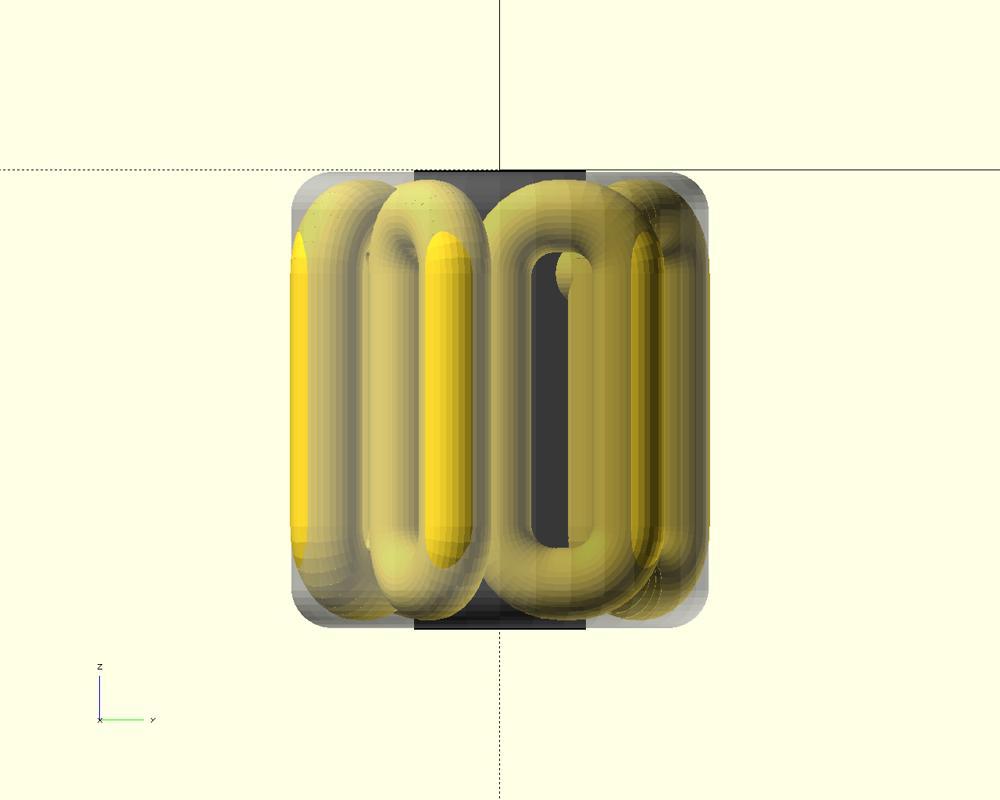
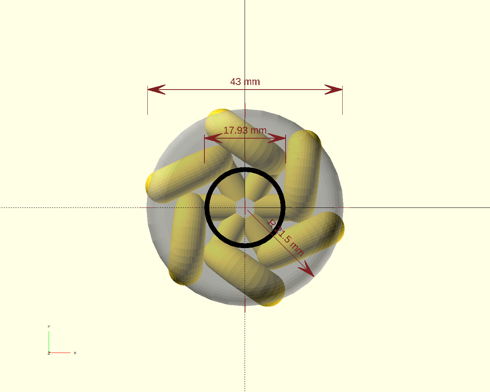
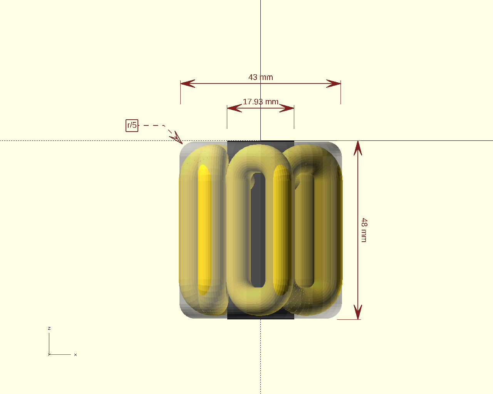
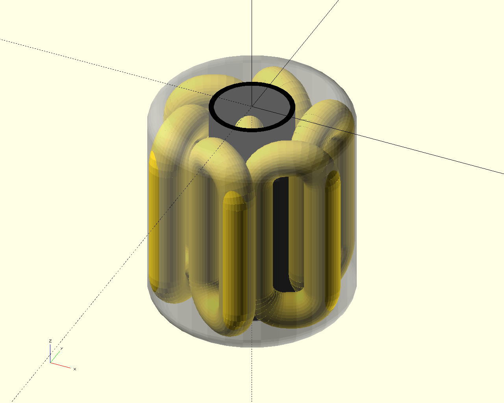

|
omdl
v1.0
OpenSCAD Mechanical Design Library
|
|
omdl
v1.0
OpenSCAD Mechanical Design Library
|
omdl, OpenSCAD Mechanical Design Library, is an open-source parametric framework for mechanical design in OpenSCAD. It provides reusable design primitives and fabrication-oriented modules intended to support real mechanical workflows rather than isolated geometric modeling.
omdl was originally conceived to support the design of mechanically engineered objects intended for real-world CNC-based fabrication. A central goal of the library is to separate design intent from implementation parameters, enabling late-time parameter binding during model composition.
By decoupling intent from geometry, designers can work at a higher level of abstraction, describing what a component must achieve rather than committing early to specific dimensions or configurations. This approach increases target outcome flexibility, allowing designs to be recomposed or adapted to new requirements without rewriting core geometry.
In practice, this means that assemblies can be adjusted to match a particular application, manufacturing constraint, or the commodity components currently available. Late parameter binding allows the same design definition to integrate different off-the-shelf parts, making omdl well suited for iterative engineering workflows and fabrication-driven design.
The library emphasizes:
Instead of treating OpenSCAD purely as a shape generator, omdl introduces a structured mechanical design layer that helps bridge conceptual design, drafting, and fabrication.
omdl is shaped by a set of design decisions that follow from its engineering focus.
Geometry is treated as a consequence of mechanical decisions, not their starting point. Rather than exposing low-level shape primitives as the primary interface, omdl encourages working at the level of components, operations, and assemblies — describing what a part must achieve before specifying how it is constructed.
Modules are designed to be included individually as needed, helping keep projects lightweight and reducing unnecessary dependencies. This modular approach also supports interoperability, making it easier to integrate omdl alongside other OpenSCAD design libraries without imposing a rigid project structure.
The library is organized into modular groups that represent distinct functional areas, including tooling utilities, drafting operations, design data, mathematical operations, geometric primitives, and mechanical components. This structure encourages separation of concerns while allowing developers to work at the appropriate level of abstraction for their design.
All documentation is generated from inline source comments using Doxygen. The documentation is retrieved from the source code and pre-processed by openscad-amu before being sent to Doxygen for processing into the desired output format.
This approach ensures that:
Validation scripts are executed during the documentation build process to confirm that core operations behave consistently across supported OpenSCAD versions. This has become less pressing with the maturing OpenSCAD language.
omdl is intended for:
It may be less suitable for purely artistic modeling workflows where strict dimensional control is unnecessary.
Before running examples, follow the [installing] instructions to set up omdl and its build environment. For an introduction to the type system and parameter conventions used throughout the library, see [data types].
The minimal example below demonstrates how omdl modules can be combined to construct a fabrication-oriented component. The example builds a custom linear rod bearing using parametric dimensions and unit conversion functions.
Hello world script
In this example, bearing_linear_rod() is used to construct a custom linear bearing for fabrication on a 3D printer.
| right | top | front | diag |
|---|---|---|---|
 |  |  |  |
The dimension operations in the above example can be found near the end of docs_home.scad within the scope quickstart.
omdl is developed using Git and hosted on GitHub. Contributions typically follow the standard forking and pull requests workflow. Because the project is licensed under the GNU Lesser General Public License, modified files should retain original copyright notices alongside any new authorship.
Ideas, bug reports, feature requests, and improvements to documentation are encouraged.
Questions, feature requests, or issues can be submitted through the project’s issue tracker.
{kind=link}
{kind=link}
{kind=link}
{kind=link}